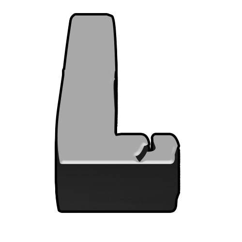

LoLauncher
A fast, lightweight, and highly customizable Minecraft launcher focused on user experience and seamless integration with modern services like Modrinth and Ely.by.
Key Features
Multi-Account System
- Offline Mode: Play under any nickname without a password.
- Microsoft Authentication: Official login for licensed accounts.
- Ely.by Integration: Full support for the popular skin and auth service.
Smart Skin Management
- Priority skin & cape loading from Ely.by and Mojang.
- Custom Avatars: Upload any photo and crop/rotate it with an in-app built-in editor.
Advanced Version Manager
- Supports all official versions (Releases, Snapshots, Alpha, Beta).
- Automated installation of popular mod loaders: Forge, Fabric, Quilt.
- Built-in OptiFine support.
Modrinth Integration
- Built-in catalog to search, discover, and download mods, shaders, and resource packs directly inside the launcher interface without opening a browser.
Offline Capability
- The launcher caches version manifests. If there is no internet connection, you can still easily launch any previously downloaded game version.
Discord Rich Presence
- Show off your live game status on Discord, including your current Minecraft version, nickname, and total playtime.
User Experience & Comfort
Ultimate Performance
- Instant Account Switching: Thanks to memory texture caching, profiles swap instantly without network delays.
- Blazing Fast Startup: No heavy web engines like Electron inside. Clean, native-like speed.
Modern UI & Automation
- Uses native Windows API (via JNA) for modern Windows 10/11 style file dialogs.
- Java Automation: Automatically detects and installs the correct Java version required for each specific Minecraft version.
- Debug Console: Clear log window with error filtering to easily find mod crash causes.
Frequently Asked Questions
Is it free?
Yes, of course!
Are there any viruses?
No, as long as you downloaded it from this official website.
Can I download mods, modpacks, etc.?
Yes, you can download everything directly through the built-in system.
Can I change my skin in LoLauncher?
Yes, you can easily do that through the Ely.by service.
My game won't launch, what should I do?
Please contact our support team via Discord or Email, and we will help you!
Project Team

Txxicu
Lead Developer
Testers

m1sanya
Beta Tester
ну это все))